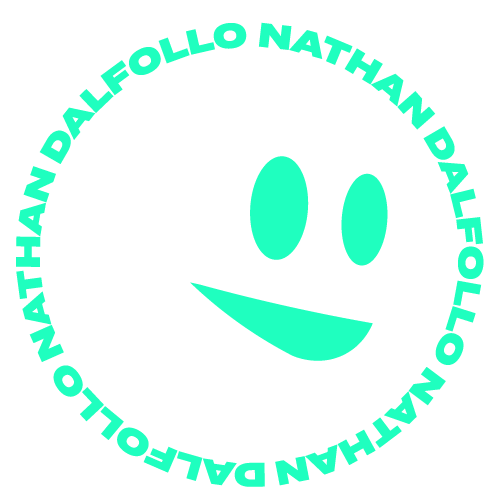

|  |
~$ whoami
Hi ! My name is Nathan Dalfollo, I'm years old and I live in Switzerland. I am very interested in malware analysis, reverse engineering and various other cybersecurity topics. Currently, I am doing an apprenticeship as a mediamatician at the FVS Group, which is an event company based in Martigny, Wallis.
I would love to work as an engineer in any field of cybersecurity later, especially in something related to research or incident response.
My website is composed of two main sections: A project page, where you'll find the different things i am interested in in my free time, and a portfolio page where i will upload some of my job productions to keep a track of them.
Enjoy !